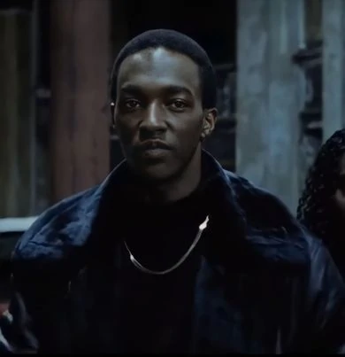

Papa Docs's Phili Steak

Phili steak toastie from the famous Papa Doc
If you want to join the 313 then you should try this recipe!
Ingredients
- Toastie Bread
- Cooked Shredded Steak
- Phili Cheese
Steps
- Place your shredded steak on your toastie bread
- Put the desired amount of phili cheese on top of shredded steak
- Place the toastie bread and contents on an oven tray
- Place in the oven for 10 minutes at 180 degrees celcius
- Remove from oven and place toasted bread together
- Allow toastie to cool
- Eat and enjoy!
Return Home
We hope you all enjoy our famous recipes, please share this website so everyone can enjoy the taste of 8 Mile!